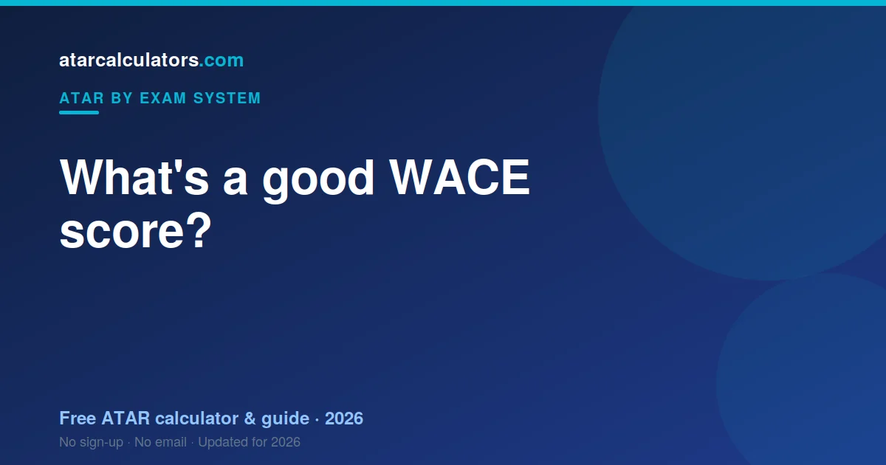

For the WACE, a good result is one that ranks you well within your subject, and strong results in well-scaling subjects matter most. Because scaling differs by subject, the same raw result can contribute very differently to your ATAR. For a 90+ ATAR, you generally need strong, well-scaling results across your best subjects. WA’s median ATAR runs higher than the eastern states, around the low 80s, because fewer students sit the ATAR. So local benchmarks differ a little.
Key takeaways
- Strong results that rank you well within a subject matter most.
- Strong results in well-scaling subjects count for more.
- The same raw result can contribute very differently to your ATAR.
- For a 90+ ATAR, you need strong results across your best subjects.
- A high result in a low-scaling subject still counts — ranking well matters.
- Your best four scaled course scores form your aggregate.

How WACE subject results work
Each WACE ATAR course reports a mark out of 100. Unlike a VCE study score, it is not pre-ranked — TISC scales it afterwards, and only then does it mean something comparable across courses.
The first thing to check is whether your course is an ATAR course at all. General courses report marks that never reach your TEA.
What counts as a good WACE result?
A good WACE mark is one that ranks you high inside your own course. The raw number tells you less than it appears to, because scaling has not happened yet.
Western Australia counts your best four, then adds bonuses — so "good" means good four times, with a possible top-up.
Why scaling changes the answer
Scaling is why two marks of 80 differ in value. TISC adjusts each course by its cohort strength, and in WA a further 10% bonus then applies to Mathematics Methods, Mathematics Specialist and languages.
What WACE result do you need for a 90+ ATAR?
A 90+ ATAR means the top 10% of your state age group. In WA that means strong scaled marks across four ATAR courses, and the bonuses can genuinely help if your best courses happen to include Methods, Specialist or a language.
What is the average WACE result?
ATAR course marks spread across the range. Remember the WA median ATAR runs higher than the eastern states, because fewer WA students sit the ATAR at all — that is participation, not standards.
Is a high result in a low-scaling subject still good?
Yes. A high mark in a modestly scaling course beats a weak mark in a strong one. And a 10% bonus on a weak scaled mark is still a weak number — the bonus multiplies, it does not rescue.
It is about your best subjects
Your TEA comes from your best four scaled marks plus the Mathematics and language bonuses, out of 430. A good set of marks is four you can rely on.
Match your results to your goal
Work backwards from your course. Find its ATAR, then ask which four ATAR-course marks would build a TEA that reaches it.
A good WACE result is personal
A good mark is the one that opens your course. If it asks for 80 and your four clear it, they are good marks.
Estimate your ATAR
Marks make sense once you see the ATAR they produce. Our WACE ATAR calculator scales each mark, keeps your best four, applies the bonuses, and shows the TEA out of 430.
Good results by subject type
What counts as strong varies by course. An 80 in Chemistry converts better than an 80 in a broad-entry course — and an 80 in Methods converts better still, once the bonus lands.
A good result versus a high ATAR
A course mark and an ATAR are different things. The mark places you inside one course. The ATAR places you against your whole age group, after four marks are scaled, summed and topped up with bonuses.
Setting a realistic target
Aim backwards from your course. Find the cutoff and use the calculator to see which four ATAR courses reach it.
It comes down to your best subjects
Whatever the course, WA counts four scaled marks plus bonuses. A good set is four you can depend on — and General courses do not count at all.
A good result is personal
In the end, the mark that matters is the one that opens your course. Four marks that clear your cutoff have done the job.
Common questions
What is a good WACE score?
A good WACE result is one that ranks you well within your subject, and strong results in well-scaling subjects matter most. Because scaling differs by subject, the same raw result can contribute differently to your ATAR.
What WACE result do I need for a 90+ ATAR?
A 90+ ATAR usually needs strong results across your best subjects, especially well-scaling ones. There is no single guaranteed result, because your ATAR combines your best results and depends on how everyone else did.
What is the average WACE score?
WA’s median ATAR tends to run higher than the eastern states, around the low 80s. This reflects lower participation in the ATAR, not an easier system.
Is a high mark in a low-scaling subject still good?
Yes. Scaling lowers a whole subject, but your rank within it still counts. A high result means you ranked near the top, which still produces a solid scaled result towards your ATAR.